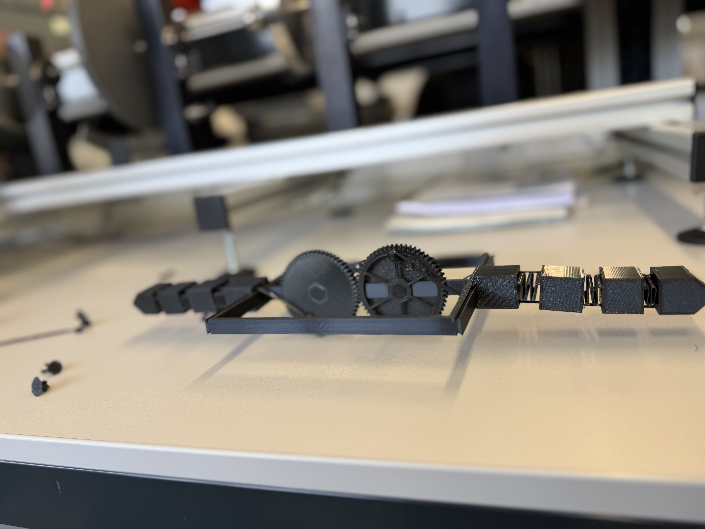

Development Process
The development of the bio-inspired manta ray model began with an in-depth research phase, where our group explored various marine creatures for inspiration. After multiple brainstorming sessions, we finalised the idea of designing a robotic manta ray because of its unique structure, elegant body design, and fluid fin movement. We studied the biology, structure, and natural movement patterns of real manta rays, focusing on their body proportions, fin dynamics, and swimming style. This research gave us an understanding of how manta rays glide smoothly in water using their large, flexible pectoral fins. We created multiple hand sketches and rough design ideas to visualise the overall shape of the manta ray and identify the possible articulation points for fin movement.

To make the design more accurate and realistic, we used 3D scanning hardware and software available in the university facilities. The main purpose of using 3D scanning was to capture the fine surface details, skin textures, and curves of existing fish models. This data was extremely useful in replicating the natural skin pattern and the organic flow of the manta ray’s body. Along with 3D scanning, we referred to multiple reference images and 3D scanned data available online to study the anatomical structure of manta rays. The scanned texture details were later integrated into the digital design to give a realistic finish to the final 3D printed model.


Once the research and data collection phase was completed, we moved on to the digital modelling process. Onshape, a cloud-based 3D modelling software, was used to create the manta ray model. The entire model was designed in multiple segments to ensure that the fins could move naturally when assembled. Instead of traditional CAD software like Fusion 360, Onshape provided flexibility in creating and refining the model collaboratively. We focused on designing a hollow main body for lightweight construction, with segmented left and right pectoral fins that could simulate the flapping motion of a real manta ray. Special attention was given to designing the fin sections, where flexible movement was required. The model was designed in such a way that it allowed for easy attachment of servo motors and the integration of fishing thread to control fin movement.
Motion capture hardware and software were utilised to study how manta rays move their fins while swimming. This technology helped us observe the fin motion pattern and inspired us to replicate a similar motion in our model. We carefully studied the range of movement, flexibility, and direction of fin flaps to guide our design choices. These insights were essential for planning how the fins of our robotic manta ray would move using fishing thread connected to servo motors.
For 3D printing the model, Poly-lactic Acid (PLA) filament was selected as the primary material. PLA was ideal for this project because of its strength, durability, and ease of printing. For connecting and assembling different parts like fins and body, we used pins. To enable fin movement, fishing thread was used to link the fins with servo motors, allowing for controlled and flexible articulation. The use of fishing thread provided lightweight yet strong connectivity between moving parts. Basic electronics like servo motors were included to power the fin movement, making the model function more like a robotic concept.
After finalising the design in Onshape, the model was divided into separate parts suitable for 3D printing. The main 3D printed parts included:
- The hollow main body shell
- Segmented left and right pectoral fins
- Tail and caudal fin with optional motion features
- Internal mounting structures to support servo motors and connections
Once the 3D printing process was completed, the next phase involved post-processing the parts to ensure proper fit and finish. All support materials were carefully removed, and the printed surfaces were cleaned and smoothed using sanding tools. The parts were then assembled manually. Pins were used to connect the fins to the main body, and fishing thread was attached from the servo motors to specific fin sections to enable controlled movement. Manual adjustments and testing were done to ensure that the fins moved smoothly without friction or resistance.
The final assembled manta ray model was tested for its visual accuracy, structural integrity, and fin movement functionality. We powered the servo motors to test the fin articulation using the fishing thread mechanism. The model successfully demonstrated lifelike fin motion, closely mimicking the gentle and flowing movements of a real manta ray. Photographs and videos were taken to document the working prototype and development process.
The completed manta ray model was presented as a fully 3D printed, bio-inspired robotic prototype that combines organic design with mechanical movement. The project highlighted how engineering and biomimicry can work together using modern manufacturing tools like 3D scanning, motion capture, Onshape modelling, and 3D printing.